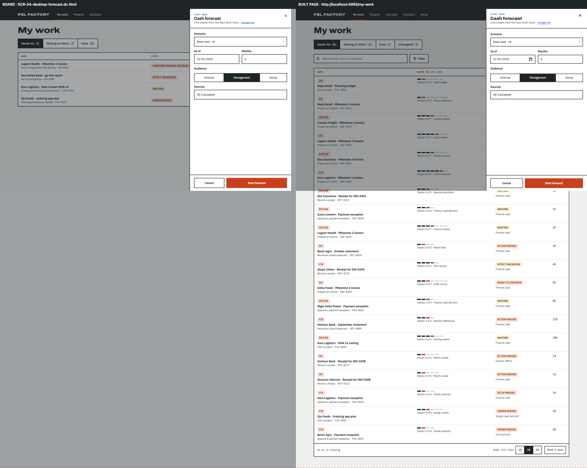
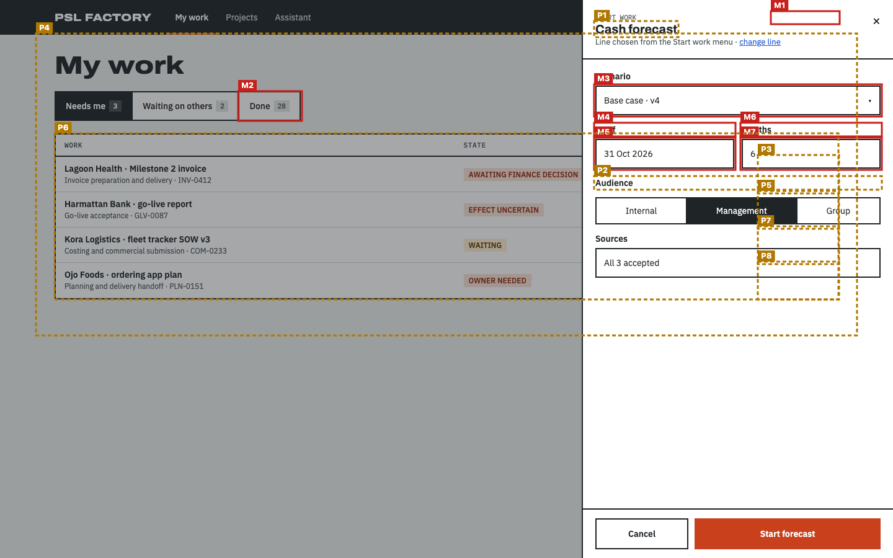
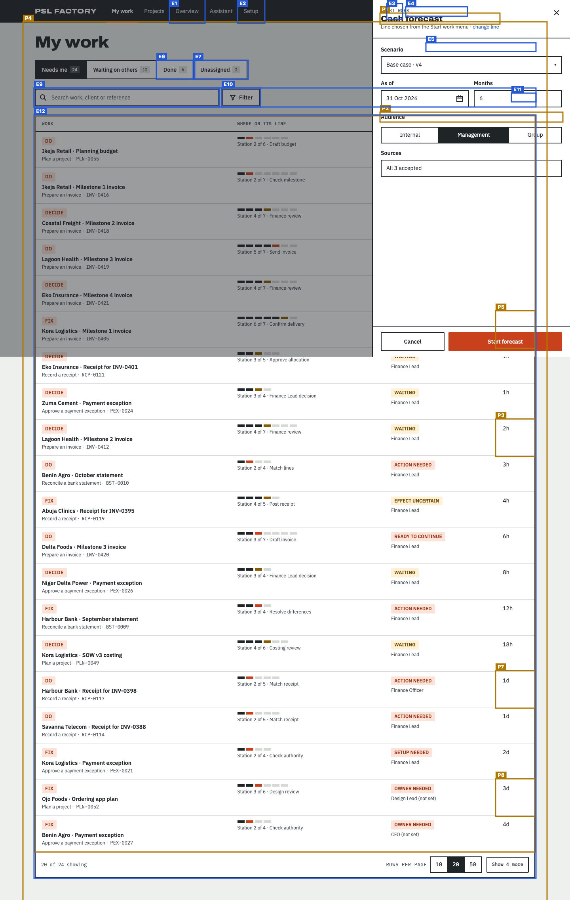
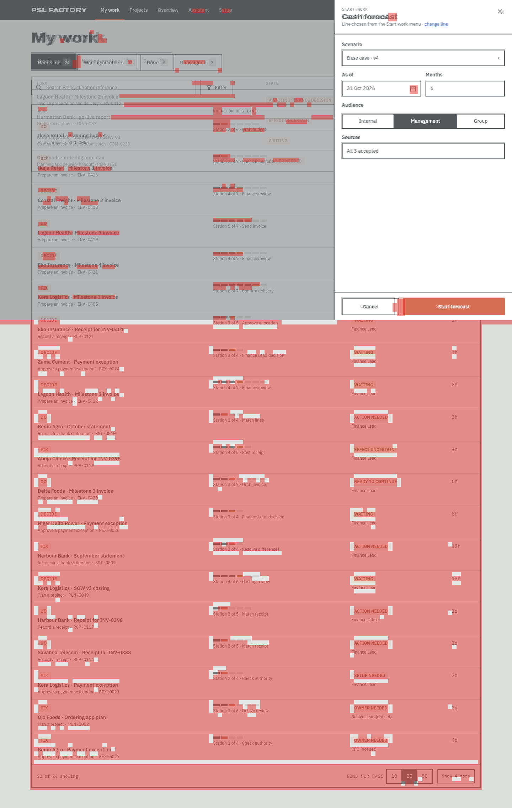

Does the built page follow the design?
Board SCR-04-desktop-forecast.dc.html compared with http://localhost:4965/my-work at 1440px wide · 2026-11-20T10:05:53.964Z
- Every board item is on the page or approved as an exception (100%).
- Visual match 43.3 is below 90.
- 8 item(s) are in a different place; review them (not part of the pass rule unless --strict-position).
32 of 39 things drawn on the board were found on the page: headings, buttons, links, search and filter controls, table columns, labels and the repeated rows (counted once, not per row).
How closely the shapes line up: blocks, bars, tables and text areas, compared in 12px squares over the top 2271px. Different words in the same place still count as a match, so sample data does not lower the score.
Missing from the built page 7
Drawn on the board but not found on the page. Each one must be built, or approved as an exception.
| # | What | Text on the board | Where on the board | Exception |
|---|---|---|---|---|
| M1 | Text | Tunde Bello · PMO | right, 20px down | approved Conflicts 2: the board draws the PM's name; the lines are served to the Finance persona only, so the top bar shows that person's own name. · builder proposal, pending design engineer |
| M2 | Tab | Done 28 | left, 149px down | approved Conflicts 5: frame item; the My work page under the scrim is the board's own list, not My work as built (real tabs and counts). · builder proposal, pending design engineer |
| M3 | Text | Base case · v4 ▾ | right, 138px down | approved Conflicts 5: text inside a control (the chosen scenario, a record from E-LINE-OPTIONS); matched by the control, not by text. · builder proposal, pending design engineer |
| M4 | Text | As of | right, 200px down | approved Conflicts 5: the label is drawn above the input and is the input's name; the tool lists it as text and did not match it. Unverified by the builder; UI review to confirm. · builder proposal, pending design engineer |
| M5 | Text | 31 Oct 2026 | right, 224px down | approved Conflicts 5: the typed date sits in the As of input's value, which the tool does not read as text. · builder proposal, pending design engineer |
| M6 | Text | Months | right, 200px down | approved Conflicts 5: as for As of, the label is the input's name; UI review to confirm. · builder proposal, pending design engineer |
| M7 | Text | 6 | right, 224px down | approved Conflicts 5: the typed Months sits in the input's value, which the tool does not read as text. · builder proposal, pending design engineer |
In a different place 8
Found on both, but in a different order, side of the page, or area (for example inside the table frame instead of above it).
| # | What | How it moved |
|---|---|---|
| P1 | Text Cash forecast |
|
| P2 | Text Audience |
|
| P3 | Text 2h |
|
| P4 | Main area |
|
| P5 | Text 40m |
|
| P6 | Table |
|
| P7 | Text 1d |
|
| P8 | Text 3d |
|
Looks different 11
Found on both, but styled differently: table rows and cells, fonts, colours, underlines, outlines, corners. Not part of the score; check each one against the board.
| What | Difference |
|---|---|
| Link "Start work" |
|
| Link "More ways to start" |
|
| Text "2h" |
|
| Text "40m" |
|
| Text "1d" |
|
| Text "3d" |
|
| Text "Cash forecast" |
|
| Link "change line" |
|
| Link "Close" |
|
| Link "Cancel" |
|
| Link "Start forecast" |
|
On the page but not on the board 12
Built but not drawn. Some are expected (data, status lines); the rest need the design engineer to approve or remove them.
| # | What | Text on the page | Where on the page |
|---|---|---|---|
| E1 | Link | Overview | left, 0px down |
| E2 | Link | Setup | middle, 0px down |
| E3 | Button | Alerts, 1 unread | right, 11px down |
| E4 | Text | Ada Okafor · Finance Lead | right, 19px down |
| E5 | Text | 44 records you can see · updated 10:42 | right, 110px down |
| E6 | Tab | Done 6 | left, 154px down |
| E7 | Tab | Unassigned 2 | middle, 154px down |
| E8 | Search area | middle, 224px down | |
| E9 | Search box | Search | left, 224px down |
| E10 | Filter | Filter | middle, 224px down |
| E11 | Text | 24 ITEMS | right, 237px down |
| E12 | tabpanel | Needs me | middle, 292px down |
Pictures
The red dashed line on the side-by-side marks how far down the visual score looks. On the marked board, red boxes are missing items (M). On the marked page, amber boxes moved (P) and blue boxes are extra (E). In the difference picture both screens are laid over each other and red squares are where the shapes do not line up.






Notes about this run
- Images: /_blob/ images are served from /Users/Hunchoo/psl-factory-worktrees/f-51/design/mascots/canvas-assets.json (19 mapped).
Found on both (32)
| Navigation area | Main | |
| Text | PSL FACTORY | |
| Link | My work | |
| Link | Projects | |
| Link | Assistant | |
| Link | Start work | |
| Link | More ways to start | |
| Main area | ||
| Heading | My work | |
| Tabs | My work | |
| Tab | Needs me 3 | page: Needs me 24 |
| Tab | Waiting on others 2 | page: Waiting on others 12 |
| Table | page: Your work | |
| Table column | WORK | |
| Table column | STATE | |
| Table column | AGE | |
| Text | 2h | |
| Text | 40m | |
| Text | 1d | |
| Text | 3d | |
| dialog | Cash forecast | |
| Text | START WORK | |
| Text | Cash forecast | |
| Text | Line chosen from the Start work menu · change line | |
| Link | change line | |
| Link | Close | |
| Text | Scenario | |
| Text | Audience | |
| Text | Sources | |
| Text | All 3 accepted | |
| Link | Cancel | |
| Link | Start forecast |
How the scores are worked out
Element coverage. The board is drawn locally from its own template and sample data. From the drawn board the check lists everything a person sees or uses: page areas (navigation, main, search), headings, links, buttons, form fields with their labels, table column headers, filter, search and pagination controls and fixed labels. Rows drawn from sample data count once, as a pattern ("table rows with these columns"). Each item is looked for on the page by its kind and its words (ignoring capitals, curly quotes and small wording differences, at least 80% similar). Coverage is found ÷ drawn. Order is compared in reading order (top to bottom, left to right); an item is "moved" when it breaks the order, sits on the other side of the page, or sits inside a different area.
Visual match. Both full-page screenshots are compared in 12px squares after a light blur, over the board's height (2271px; the page is 2271px). Only squares with something in them count. A square matches when its colours line up, or when both have text or lines there. Score = matching ÷ counted squares (8661 of 19983). Over every square including empty background it would be 38.
Technical details
Board file: /Users/Hunchoo/psl-factory-worktrees/f-51/design/canvas/project/SCR-04-desktop-forecast.dc.html
Viewport: 1440×900
Report data: report.json
Exceptions file: /Users/Hunchoo/psl-factory/delivery/features/F-51/fidelity-exceptions.json